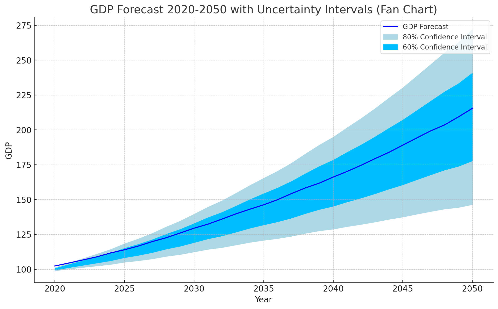
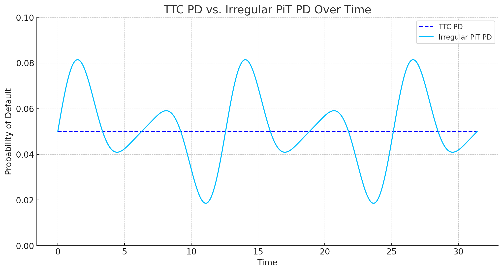

Credit Risk#
Stress Testing#
I worked on regulatory stress tests since the first of the PRA’s Annual Cyclical Scenario exercises in 2015. First as part of Scenario Expansion at RBS’ Enterprise Wide Risk (EWR) group, then at the same function at Barclays’ EWR and subsequently at PwC’s Risk Modeling Services group where I performed the same role on behalf of our banking clients. Finally, I spent a year working at HSBC’s Climate Scenario team, again as part of Group Risk.
IFRS 9#
Scenario Probability Weights#
At NatWest Group (then RBS) I worked on macro-economic scenario design and expansion, building a scenario expansion engine based on the OBR’s own econometric model and using that, in conjunction with Moody’s Analytics’ methodology, to assign IFRS 9 probability weights. This was initially built in EViews and then translated to R, leading a team of third party consultants.

1. Use an AR(1) process to model GDP and take the residuals which you then bootstrap.
2. Then reconstruct a bootstrapped GDP series and use that in a VAR(1) with an exogenous, driver, variable that defines the scenario (e.g. World GDP, US GDP, Oil prices, etc.)
3. Run a large number of Monte Carlo simulations and use them to recover the empirical distribution of scenario outcomes (empirical CDF).
4. Place the regulatory scenario on that empirical CDF or choose an appropriate percentile of same to define a scenario.
ECL model#
At PwC I worked on a number of IFRS 9 model audits and also re-produced a large banking client’s entire wholesale ECL modeling suite in R as part of the audit process. This was a large project that took several months to complete and allowed me to learn a lot about PD and LGD modeling. The model replication covered the Macro PD model, Through-the-Cycle and PiT Transition Matrix estimation (cohort and duration approach), CPD and LGD modeling.

Estimate Macro PD using macro-economic factors to model Observed Default Rate (ODR) via logistic regresiion.
Estimate Throught the Cycle Transition Matrix (TTC TM) using either cohort or duration approach.Shift the distribution of rating migrations represented by the transition matrix using a factor, Z, recovered from the Macro PD.

Using the shifted TM, construct the Conditional Probability of Default (CPD) at each point in time by post-multiplying the original PD by the shifted transition matrix for each intervening time.
Use the final CPD as an estimate of the Point in Time (PiT) PD at that point.
IRB#
At PwC I worked on desktop model reviews of IRB PD and LGD models (downturn LGD) and a large project to build a toolkit that allowed banking clients to estimate the best time to roll-over their portfolio to the new Basel RWA floor approach.